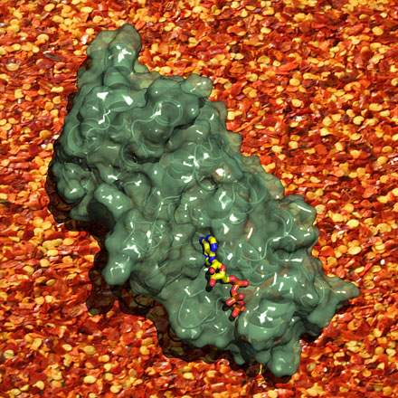

News Archives : 2007 : Fine-tuning Heat Sensitivity
by Rachelle Gaudet, Christopher B. Phelps and Erik Procko
June 26, 2007
 |
|
TRPV1 is the “heat receptor” in a large fraction of pain-sensing neurons. It is an ion channel with a gate that opens to let ions (including sodium and calcium) flow across the cell membrane in response to heat or capsaicin, the spicy chemical in chili peppers. Once the gate opens, ion flow through the channel causes an action potential, an electrical signal that reaches the brain and causes a burning pain sensation. In addition, the calcium ions that flow into the neuron also have local effects inside the neuron. These include reducing the sensitivity of the TRPV1 channel.
The Gaudet group determined the three-dimensional structure of a module of TRPV1 that resides inside the cell, the ankyrin repeat domain or ARD (see figure). Surprisingly, they found a molecule of ATP, the cellular fuel, bound to the ARD. Through a series of further experiments, they determined that the role of ATP here is not to provide energy, but rather to assist in sensing calcium levels. ATP works hand-in-hand with calmodulin, a cellular calcium sensor, to tune the sensitivity of TRPV1 to stimuli like capsaicin and heat. When the neurons are resting, ATP is likely bound to the ARD, increasing TRPV1 sensitivity. When the TRPV1 gate opens in the presence of heat or capsaicin, the calcium influx causes the release of ATP and its replacement by calcium-bound calmodulin. Calmodulin binding causes the gate to close, regardless of whether heat or capsaicin is still present. Hence, TRPV1 is now desensitized, or more difficult to open.
Future work will address how the information encoded at the ARD - that is, the presence of ATP or calmodulin - is transmitted to the TRPV1 gate, so that ATP favors the opening of the gate whereas calmodulin favors its closure.
These new findings have important implications for many medical conditions and diseases that cause pain. For example, allodynia, an exaggerated burning pain sensation to normally innocuous stimuli, is associated with many inflammatory diseases. This new handle on the regulation of TRPV1 sensitivity could potentially be used to pharmacologically tune TRPV1 to lower sensitivity thresholds, relieving pain symptoms.